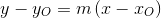
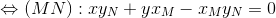
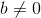
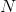
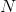
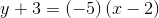

Ecuația dreptei determinată de un punct și de o direcție dată
Pentru început să vedem care este ecuația dreptei determinată de un punct și de o direcție dată, ca mai apoi să aflăm ecuația dreptei determinată de două puncte distincte.
Având noțiunea de pantă și cea de unghi dintre două drepte introduse în pagina anterioară, putem acum să vorbim despre ecuația dreptei determinată de un punct și de o direcție dată.
Fie un punct .
Ecuația dreptei care trece prin acest punct și are panta  este:
este:
.
Observație:
Avem două cazuri mai speciale și anume:
- Ecuația care trece prin origine și care formează cu axa absciselor un unghi de (adică ) va fi:

.
Panta este egală cu  (
( ), deoarece .
), deoarece .
Dreapta care are această ecuație se numește prima bisectoare.
- Ecuația care trece prin origine și care formează cu axa absciselor unghi de (adică ) va fi:

.
Panta este egală cu  (), deoarece .
(), deoarece .
Dreapta care are această ecuație se numește a doua bisectoare.
Înainte să vorbim de forma explicită a ecuației unei drepte, trebuie să definim introducem următoarea noțiune:
Definiția 26: Ordonata la origine a unei drepte
Fie dreapta  și sistemul de coordonate
și sistemul de coordonate  .
.
Ordonata la origine a dreptei este reprezentată de lungimea segmentului pe care dreapta îl determină pe axa  .
.
Acum, ecuația explicită a unei drepte cu ordonata la origine  și panta este:
și panta este:
.
.jpg)
Întâlnim următoarele cazuri particulare:
- Dacă , ecuația devine – ecuația dreaptei care trece prin origine și are panta .
Dacă
, , ecuația devine – ecuația primei bisectoare.Dacă , , ecuația devine – ecuația celei de-a doua bisectoare.
Ecuația
 – ecuația axei
– ecuația axei  .
. Ecuația
 – ecuația axei .
– ecuația axei .
Aplicații
Pentru a înțelege mai bine noțiunile prezentate anterior, profesorii noștri experimentați de matematică ți-au pregătit următoarele exerciții rezolvate complet și pas cu pas, special pentru tine.
- Să se scrie ecuația dreptei care trece prin punctul și are panta .
Soluție:
Înlocuim datele în formula de mai sus și obținem:

.
- Să se scrie ecuația unei drepte
 care trece prin punctul și este paralelă cu dreapta de ecuație: .
care trece prin punctul și este paralelă cu dreapta de ecuație: .
Rezolvare:
Folosind noțiunile din pagina anterioară, avem că ecuația explicită a dreptei este  .
.
Trebuie să găsim panta și ordonata la origine .
Dreapta este paralelă cu dreapta , iar din secțiunea „Panta unei drepte. Unghiul a două drepte”, avem că cele două drepte au pantele egale.
Rezultă că .
Punctul aparține dreptei , de unde obținem coordonatele acestui punct, care trebuie să verifice ecuația dreptei , astfel:

.
Rezultă că ecuația dreptei este:
.
Ecuația dreptei determinată de două puncte distincte
Fie ,  două puncte distincte în planul .
două puncte distincte în planul .
Aceste două puncte determină o dreaptă, pentru care vom găsi o ecuație.
Am văzut că panta determinată de cele două puncte este:
.
Vom scrie ecuația dreptei determinată de punctul  și panta astfel:
și panta astfel:
.
Deci ecuația dreptei care trece prin punctele , respectiv , cu , este:
.
Avem următorul caz particular: ecuația dreptei prin tăieturi.
Definiția G27: Tăieturi într-o dreaptă
Tăieturile reprezintă punctele în care dreapta intersectează axele reperului cartezian.
Astfel, fie un punct de pe axa , iar un punct pe axa .
Aplicăm formula ecuației dreptei determinate de două drepte de mai sus și obținem:
.
Pentru a aduce la o formă mai ușoară, vom împărți ultima relație cu și obținem că:
 .
.
Așadar, ecuația dreptei prin tăieturi este:
.
Ecuațiile descrise în toate cazurile anterioare sunt ecuații de gradul întâi cu necunoscutele  și
și  .
.
Putem scrie ecuația carteziană generală a unei drepte sub această formă:
cu și .
Dacă , putem împărți ecuația cu  și obținem:
și obținem:
,
ecuație pe care o cunoaștem deja; numărul reprezintă panta dreptei, iar numărul este ordonata la origine.
Observație:
Dacă ni se dau punctele și , atunci formula pentru a afla ecuația carteziană generală a dreptei  este:
este:
 .
.
Definiția G28: Congruența a două drepte
Fie , două ecuații scrise sub această formă:
,
.
Spunem că dreptele , coincid (sunt congruente), dacă au pantele și ordonatele la origine egale.
Observație:
Dacă avem două ecuații , scrise astfel:
,
,
atunci condiția suficientă ca dreptele să fie paralele este ca, coeficienții din fața lui , respectiv să fie proporționali, adică:
.
Dacă avem dreapta
,
spunem că punctul aparține acestei drepte, dacă coordonatele sale verifică ecuația dreptei astfel:
.
În cazul în care avem două ecuații pentru , :
și ele sunt concurente (se intersectează) în punctul , înseamă că acest punct verifică ambele ecuații și astfel se formează sistemul:
.
Dacă rezolvăm acest sistem vom afla punctul de intersecție al celor două drepte.
Aplicații
Pentru a aprofunda noțiunile citite mai sus, te sfătuim să urmărești cu atenție rezolvarea următoarelor exerciții:
Să se determine numărul real
 , știind că punctul se află pe dreapta determinată de punctele , respectiv .
, știind că punctul se află pe dreapta determinată de punctele , respectiv .
Rezolvare:
Pentru început, trebuie să găsim ecuația dreptei .
Astfel, avem că:
.
Cum punctul  aparține dreptei determinată de punctele și , pentru și , ne rezultă că:
aparține dreptei determinată de punctele și , pentru și , ne rezultă că:

.
- Fie două drepte , , care au următoarele ecuații:
,
respectiv
.
Să se demonstreze că aceste drepte sunt paralele.
Rezolvare:
Ecuațiile explicite ale acestor drepte sunt:
,
respectiv
.
Pentru ca dreptele și să fie paralele, pantele lor trebuie să fie egale, lucru care se întâmplă, deci  .
.
Fie dreptele:
,
și
.
Să se arate că ele sunt concurente în punctul  .
.
Rezolvare:
Punctul de intersecție al primelor două drepte se va afla rezolvând sitemul:
.
Deci dreptele , se intersectează în punctul .
Pentru ca și cea de-a treia dreaptă să fie concurentă cu primele două, înseamnă că punctul trebuie să verifice ecuația ultimei drepte.
Așadar, avem că:


Observăm că punctul aparține dreptei  ; în concluzie , unde .
; în concluzie , unde .